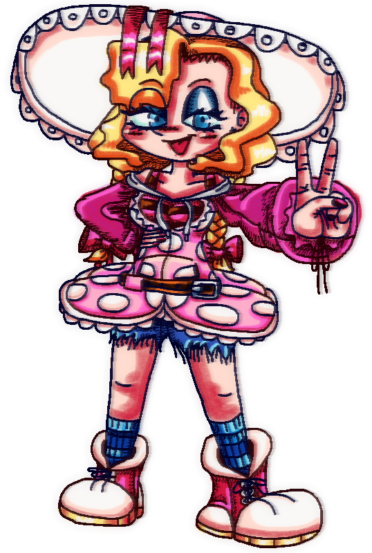

Дарина, у іноземних локалізаціях називаметься Доротея - вигадана 17-річна дівчина зі здатністю контролювати вогонь, енергійна та мила, дуже сильна.
Дарина - струнка кучерява блодинка середнього зросту з блакитними очима. Має гостренький носик, середній рот із пофарбованими червоною помадою із блиском губами. Нігті обрізані з лаком малинового кольору. Щічки пухкенькі, природно червоні. Повіки мають бірюзові тіні. Вії розщепірені й недовгі, але й не короткі, однакової довжини на обох повіках.
Дарина - відома шанувальниця великих капелюхів. Вона часто носить рожевий капелюх із пурпуровими кільцями на його верхівці, яка підперезана червоним бантиком із довгими стрічками, що звисають. Денце капелюха біле. Носить рожеву сукенку в горошок із капюшоном, кишенями як у худі та відкритим верхом, що оголює шию та плечі. Та плечах видніються смугасті лямки топа. На грудях - велике червоне серце із темними горизонтальними смугами. Спідниця має форму квітки. Її денце повністю біле. Сукенка підперезана шкіряним ременем. Рукава великі пурпурові, на лівій руці зав'язаний червоний браслет.
Шорти рвані, джинсові. Чоботи великі й червоні із білими "стопами" і горлечками, темними шнурками та жовтими підошвами. Із них виходять блакитні шкарпетки в синю смужку.
Дарина - дуже енергійна та весела дівчина. Як і инший персонаж, Анялу, вона любить пригоди і бої з поганцями.
Дарина вирізняється високим інтелектом та блискавичною швидкістю мислення, через що їй дуже легко дається навчання. Дарина цікавиться природничими науками та магією, а також своїм обдаруванням - пірокінезом, здатністю контролювати вогонь. У Дарини також чудова пам'ять.
Вона добра та щедра, але буває лінивою, якщо справа про допомогу з господарством або це будь-що, що не стосується подвигів та боротьбою за справедливість. Своє буденне життя Дарця називає "гидотною рутиною". Дарина, якщо зовсім не мотивована працювати або навколо немає "несправедливости", надає перевагу довгому сну або просто лежанню.
Попри те, що Даринка - дівчина, у неї мало суто жіночих рис. Вона нечасто доглядає за собою, але іноді робить макіяж, щоби здаватися "крутою і бунтівною", а не "красивою і привабливою". Дарина страшенно не любить, коли з нею поводяться як із дамою. Вона є людиною, що знає собі ціну та вважає, що жила би краще на самоті без хлопця. Вона каже, що зустрічалася би з хлопцем, який би бачив її людиною, другом, а не красивою дівчиною, втіхою для очей. Вона також нейтральна до компліментів щодо зовнішности, але агресивна щодо об'єктивації та, звичайно ж, збочень.
Дарця зазвичай здається "нормальною" і спокійною, але насправді це дуже уперта та іноді вайлувата людина, що дуже злитиметься, якщо не досягне своєї мети. Тому вона іноді себе поводить невиховано. Ще одна її риса - нетерплячість. Звісно ж, Дарина буває спокійною колись. Наприклад, коли займається самонавчанням.
Дарина названа так тому, що батьки дізналися про її обдарованість. Дарина не лише знатна своїм розумом, але й ще змалку показує неконтрольовані здібності до пірокінезу. Так, вона іноді ледь не спричиняла пожежі. У своєму віці, будучи на межі юности та підлітковости, Дарина досі погано контролює свої магічні дари. Іноді через свої емоції вона навіть завдавала болючих опіків тим, хто попадав під її (буквально)гарячу руку. Через це навіть друзі обережні з нею, ба навіть більше - бояться її. Дарина це лідер, що часто контролює підлеглих силою або страхом, хоч і має блискучий інтелект.